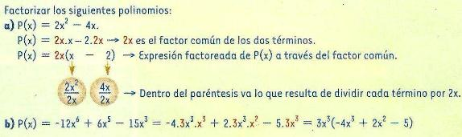
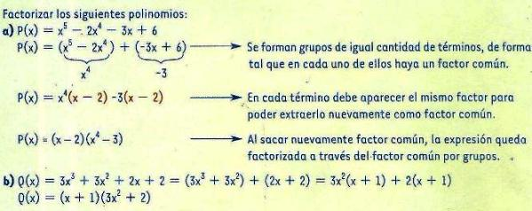
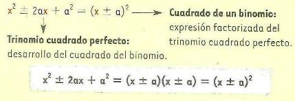
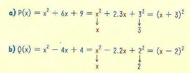
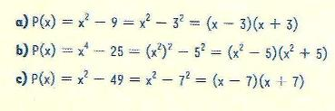
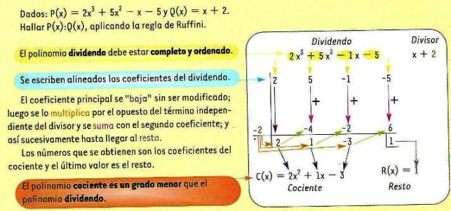

¿Cómo realizar un gráfico aproximado?
Recuperemos los saberes referidos a los casos más utilizados de Factorización de polinomios: (es expresarlo como un producto de polinomios primos)
Factor común
Para extraer el factor común, primero reconocé cuál es el factor que se encuentra repetido en cada término. El factor común puede ser la variable del polinomio, elevada a la menor potencia, y/o el divisor común mayor de todos los coeficientes del mismo.
Luego, para encontrar el factor que va entre paréntesis, dividí cada término por el factor común.
Ejemplos:

Factor común por grupos
Se aplica a polinomios que no tienen un factor común en todos sus términos.
Ejemplos:

Trinomio cuadrado perfecto
Se aplica cuando se tiene un trinomio (3 términos) de grado par, con dos términos que son cuadrados perfectos y un término que es el doble del producto de las raíces cuadradas de los otros dos.

Ejemplos:

Diferencia de cuadrados
Se aplica cuando P(x) es una resta de dos términos y cada uno de ellos está elevado a una potencia par. La fórmula que se aplica es:
x2 - a2 = (x-a)(x+a)
Ejemplos:

Suma y resta de potencias de igual exponente
Para éste caso recordá la Regla de Ruffini: es un método práctico que se utiliza para dividir un polinomio P(x) por otro cuya forma sea x ± a.

Para un polinomio de la forma P(x) = xn ± an existen cuatro posibilidades:
P(x) = xn ± an Λ n es par
P(x) = xn ± an Λ n es impar
Expresá el siguiente polinomio en función de sus raíces:
P(x) = -3x3 + 15x2 - 24x + 12